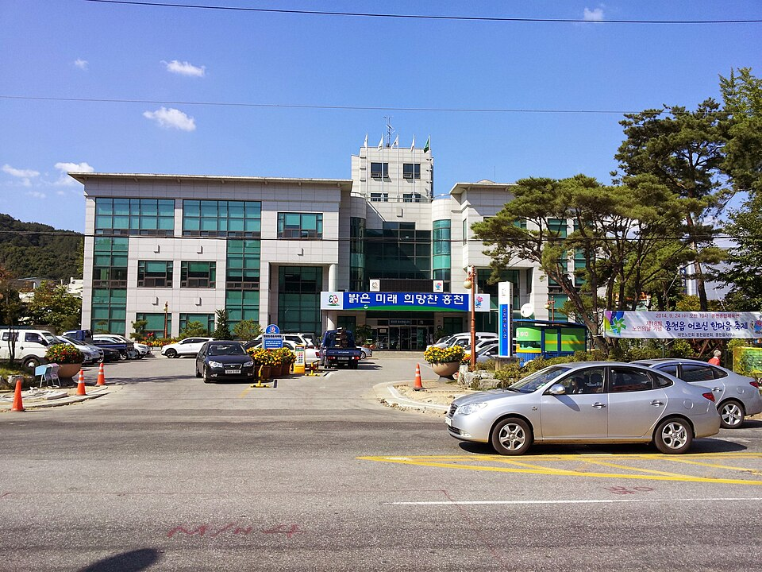

홍천 검정고시 — 외운 게 자꾸 사라질 때

오랜만에 책을 다시 편 분들이 가장 많이 하시는 말이 "외워도 돌아서면 잊어버린다"입니다. 그래서 머리가 예전 같지 않다고 결론을 내고 그만두시는 경우가 많습니다. 그런데 이야기를 들어 보면 대부분 기억력 문제가 아니라, 외우는 방식이 학교 다닐 때 그대로인 경우입니다. 강원 홍천 검정고시를 준비하면서 이 부분을 어떻게 바꾸면 되는지 정리했습니다.
한 번에 오래 외우는 방식이 제일 안 남습니다
책상에 앉아 두 시간을 꼬박 한 단원에 쓰고 나면 그날은 다 외운 것 같습니다. 그런데 사흘 뒤에 보면 거의 남아 있지 않습니다. 반대로 같은 내용을 짧게 여러 번 나눠서 보면, 한 번에 쓰는 시간은 훨씬 적은데도 더 오래갑니다.
그래서 하루 두 시간을 쓸 수 있다면 한 단원에 두 시간을 붓는 대신, 오늘 30분·내일 20분·사흘 뒤 15분처럼 같은 단원을 간격을 두고 다시 보시길 권합니다. 두 번째 볼 때는 처음보다 훨씬 빨리 끝나고, 세 번째는 더 빨라집니다. 시간이 모자란 게 아니라 한곳에 몰려 있는 것이 문제인 경우가 많습니다.
눈으로만 읽으면 외운 줄 착각합니다
교재를 읽을 때는 다 아는 것 같은데 책을 덮으면 아무 말도 안 나오는 경험, 다들 해 보셨을 겁니다. 읽는 동안에는 글자가 앞에 있어서 '아는 느낌'이 들 뿐입니다.
확인하는 방법은 간단합니다. 책을 덮고 소리 내어 설명해 보시면 됩니다. 옆에 사람이 없어도 됩니다. 말로 해 보면 어디서 막히는지가 바로 드러납니다. 막힌 자리만 다시 펴서 보시면 되고, 술술 나온 부분은 더 안 보셔도 됩니다. 외울 게 줄어드는 겁니다.
'안 외워지는 것'과 '아직 덜 본 것'은 다릅니다
안 외워진다고 느끼는 내용을 모아 보면, 상당수는 아직 두세 번밖에 안 본 것입니다. 처음 보는 말이 한 번에 머리에 남는 경우는 원래 드뭅니다. 이걸 "나는 안 된다"로 받아들이면 공부를 그만두게 됩니다.
그래서 외우다 막히면 그 자리에 작게 표시만 해 두고 넘어가시는 게 낫습니다. 한 바퀴 다 돈 다음에 표시한 것만 모아서 다시 보면, 그 사이에 저절로 풀린 것이 꽤 있습니다. 남은 것만 따로 모아 두시면 외워야 할 분량이 생각보다 훨씬 적습니다.
살아온 시간이 유리하게 쓰이는 과목이 있습니다
사회나 한국사처럼 세상 돌아가는 일과 맞닿은 과목은, 오래 지낸 분들이 오히려 수월하게 보시는 경우가 많습니다. 뉴스에서 들어 본 제도나 사건이 교재에 그대로 나오기 때문입니다. 반대로 수학은 손을 놓은 기간이 길수록 앞 단원부터 다시 밟아야 합니다.
그래서 시작할 때 어느 과목이 나에게 빨리 점수가 되는지부터 가려 두는 편이 좋습니다. 검정고시는 과목마다 합격이 따로 인정되고 평균 60점이 기준이라, 잘 나오는 과목에서 먼저 여유를 만들어 두면 남은 과목이 한결 편해집니다.
홍천에서 이렇게 함께합니다
저희는 1:1 맞춤 과외라 수업에서 설명을 듣기만 하지 않고, 배운 내용을 그 자리에서 말로 되짚는 시간을 꼭 둡니다. 어디서 막히는지가 그때 드러나기 때문입니다. 한 주 분량은 한 번에 몰지 않고 다시 보는 날까지 함께 정해 드립니다. 홍천과 인근 지역은 방문 수업이 가능하고, 거리가 멀거나 시간이 늦으면 화상(줌) 수업으로 집에서 그대로 진행합니다.
관련 검색어: 홍천검정고시 · 홍천검정고시과외 · 홍천군검정고시 · 홍천고졸검정고시